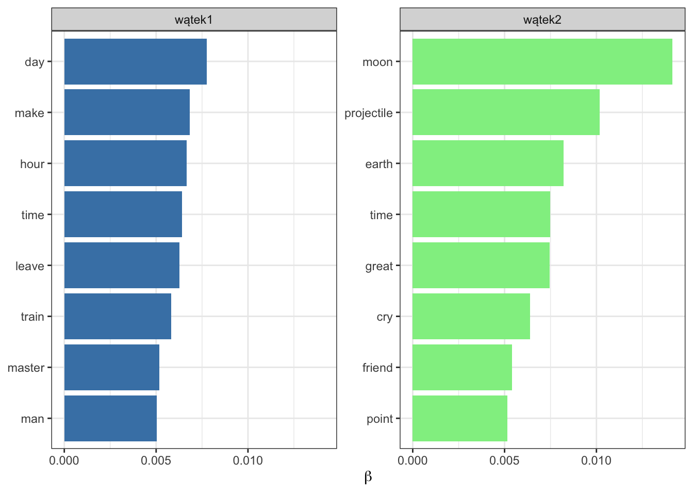
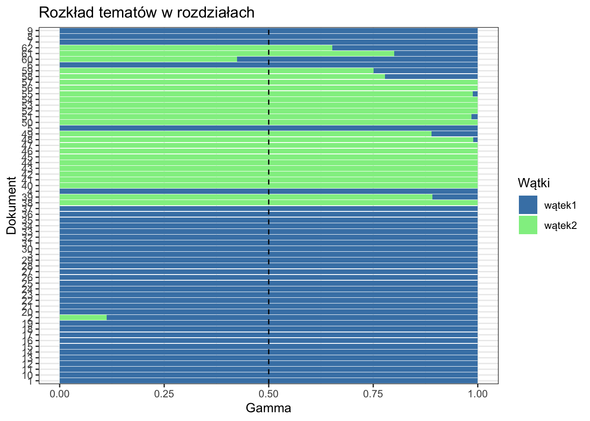

Korpus:
books_list <- list(books_docs$text)[[1]]
books_corpus <- VCorpus(VectorSource(books_list))Macierz wystąpień:
dtm_tf <- DocumentTermMatrix(books_corpus,
control = list(
bounds = list(global = c(2, Inf)), # oznacza, że terminy muszą mieć co najmniej 2 znaki
weighting = weightTf))
dtm_tf## <<DocumentTermMatrix (documents: 62, terms: 4597)>>
## Non-/sparse entries: 33034/251980
## Sparsity : 88%
## Maximal term length: 17
## Weighting : term frequency (tf)Macierz wystąpień została zredukowana do słówm które mają co najmniej dwa znaki z kilku powodów:
redukcja szumu - macierz zawierała wiele słów, które występowały rzadko i nie wnosiły istotnej informacji do analizy,
skrócenie czasu obliczeń
lda <- LDA(dtm_tf, 2, control = list(seed = 1652))
str(lda)## Formal class 'LDA_VEM' [package "topicmodels"] with 14 slots
## ..@ alpha : num 0.033
## ..@ call : language LDA(x = dtm_tf, k = 2, control = list(seed = 1652))
## ..@ Dim : int [1:2] 62 4597
## ..@ control :Formal class 'LDA_VEMcontrol' [package "topicmodels"] with 13 slots
## .. .. ..@ estimate.alpha: logi TRUE
## .. .. ..@ alpha : num 25
## .. .. ..@ seed : int 1652
## .. .. ..@ verbose : int 0
## .. .. ..@ prefix : chr "/var/folders/_8/fj4h73xd2k9bkvnpc48zttvh0000gn/T//RtmpWChnFX/file88a9124ffdc9"
## .. .. ..@ save : int 0
## .. .. ..@ nstart : int 1
## .. .. ..@ best : logi TRUE
## .. .. ..@ keep : int 0
## .. .. ..@ estimate.beta : logi TRUE
## .. .. ..@ var :Formal class 'OPTcontrol' [package "topicmodels"] with 2 slots
## .. .. .. .. ..@ iter.max: int 500
## .. .. .. .. ..@ tol : num 1e-06
## .. .. ..@ em :Formal class 'OPTcontrol' [package "topicmodels"] with 2 slots
## .. .. .. .. ..@ iter.max: int 1000
## .. .. .. .. ..@ tol : num 1e-04
## .. .. ..@ initialize : chr "random"
## ..@ k : int 2
## ..@ terms : chr [1:4597] "abandon" "abash" "abide" "ably" ...
## ..@ documents : chr [1:62] "1" "2" "3" "4" ...
## ..@ beta : num [1:2, 1:4597] -7.65 -9.6 -9.42 -17.57 -10.07 ...
## ..@ gamma : num [1:62, 1:2] 1 0.887 1 1 1 ...
## ..@ wordassignments:List of 5
## .. ..$ i : int [1:33034] 1 1 1 1 1 1 1 1 1 1 ...
## .. ..$ j : int [1:33034] 10 24 33 43 67 72 99 143 180 190 ...
## .. ..$ v : num [1:33034] 1 1 1 1 1 1 1 1 1 1 ...
## .. ..$ nrow: int 62
## .. ..$ ncol: int 4597
## .. ..- attr(*, "class")= chr "simple_triplet_matrix"
## ..@ loglikelihood : num [1:62] -3651 -3084 -5543 -2518 -2765 ...
## ..@ iter : int 29
## ..@ logLiks : num(0)
## ..@ n : int 57857Model LDA:
został skonfigurowany dla 2 tematów,
Wartość parametru alfa, kontrolującego proporcje tematów w poszczególnych dokumentach, wynosi 0.033,
zbiór dokumentów składa się z jak dotychczas 62 dokumentów (rozdziałów z dwóch książek)
Dane potrzebne do klasyfikacji w następnym rozdziale
tematy_term <- terms(lda)
tematy <- topics(lda)
tematy_term## Topic 1 Topic 2
## "day" "moon"tematy <- topics(lda)tematy_termy8 <- terms(lda, 8)
kable(tematy_termy8, format = "html", align = "c", caption = "Termy w poszczególnych tematach") %>%
kable_styling(bootstrap_options = c("striped", "hover", "condensed", "responsive"))| Topic 1 | Topic 2 |
|---|---|
| day | moon |
| make | projectile |
| hour | earth |
| time | time |
| leave | great |
| train | cry |
| master | friend |
| man | point |
W temacie 1 występują słowa takie jak “day”, “make”, “hour”, “time”, “leave”, “train”, “master” i “man”. “Train” wskazuje na środek transportu, a “leave” sugeruje opuszczenie miejsca i rozpoczęcie podróży. “Master” może odnosić się do głównego bohatera, który zarządza swoją podróżą. Temat ten skupia się na aspektach organizacji, czasu i podróży. Połączenie słów określających czas (‘day’, ‘hour’, ‘time) wraz ze słowami ’make’ i ‘leave’ może sugerować napięcie fabuły, w której bohaterzy się spieszą.
W temacie 2 wsytępują słowa takie jak “moon”, “projectile”, “earth”, “time”, “great”, “cry”, “friend” i “point”. Słowa te wskazują, że temat ten może dotyczyć podróży kosmicznych, eksploracji kosmosu, badań związanych z Księżycem, ziemią, istonością czasu, przyjaźni itp. “Moon” wskazuje na Księżyc jako ważny element w tej tematyce, a “earth” sugeruje porównanie między Ziemią a Księżycem. “Great” może odnosić się do niesamowitych i ekscytujących doświadczeń związanych z badaniami kosmicznymi. Temat ten skupia się na aspektach kosmosu, nauki i eksploracji.
Należy zauważyć, że słowo ‘time’ jest charakterystyczne zarówno dla pierwszego jak i drugiego wątku, jednak w pierwszym czas ma większe znaczenie, ze względu na dodatkowe słowa, takie jak ‘hour’, ‘day’.
Pomimo faktu, że reszta słów się różni, można wyciągnąc wniosek, że obie książki mogą eksplorować tematy podróży, odkrywania nieznanych miejsc i pokonywania wyzwań. Temat 1 może skupiać się na podróży dookół Ziemi (train), podczas gdy temat 2 może dotyczyć podróży kosmicznych (projectile), zwłaszcza w kontekście Księżyca.
tematy_termy8_string <- apply(tematy_termy8, 2, paste, collapse = " / ")
tematy8_df <- tibble(Dokument = 1:62, "Część tekstu" = paste0(substr(books_list, 1, 100), "[...]"), Wątek = tematy, Książka = c(rep("W 80 dni dookoła świata", 37), rep("Wokół księżyca", 25)), Termy = tematy_termy8_string[tematy])
kable(tematy8_df, format = "html", align = "c", table.attr = "class='table table-striped'", row.names = FALSE, caption = "Przypisane wątki do konkretnych dokumentów") %>%
kable_styling()| Dokument | Część tekstu | Wątek | Książka | Termy |
|---|---|---|---|---|
| 1 | accept master man live saville row burlington garden house sheridan die noticeable member reform clu[…] | 1 | W 80 dni dookoła świata | day / make / hour / time / leave / train / master / man |
| 2 | ii convince find ideal faith mutter flurried ive people madame tussauds lively master madame tussaud[…] | 1 | W 80 dni dookoła świata | day / make / hour / time / leave / train / master / man |
| 3 | iii conversation take place cost dear shut door house halfpast eleven put foot leave hundred seventy[…] | 1 | W 80 dni dookoła świata | day / make / hour / time / leave / train / master / man |
| 4 | iv astound servant win twenty guinea whist leave friend twentyfive minute past leave reform club con[…] | 1 | W 80 dni dookoła świata | day / make / hour / time / leave / train / master / man |
| 5 | species fund unknown moneyed man appear change rightly suspect departure london create lively sensat[…] | 1 | W 80 dni dookoła świata | day / make / hour / time / leave / train / master / man |
| 6 | vi detective betray natural impatience circumstance telegraphic dispatch steamer mongolia belong pen[…] | 1 | W 80 dni dookoła świata | day / make / hour / time / leave / train / master / man |
| 7 | vii demonstrate uselessness passport aid detective detective pass quay rapidly make consul office ad[…] | 1 | W 80 dni dookoła świata | day / make / hour / time / leave / train / master / man |
| 8 | viii talk prudent rejoin lounge quay feel oblige friend detective come passport visa ah monsieur res[…] | 1 | W 80 dni dookoła świata | day / make / hour / time / leave / train / master / man |
| 9 | ix red sea indian ocean prove propitious design distance suez aden precisely thirteen hundred ten mi[…] | 1 | W 80 dni dookoła świata | day / make / hour / time / leave / train / master / man |
| 10 | glad loss shoe great reverse triangle land base north apex south call india embrace fourteen hundred[…] | 1 | W 80 dni dookoła świata | day / make / hour / time / leave / train / master / man |
| 11 | xi secure curious mean conveyance fabulous price train start punctually passenger numb officer gover[…] | 1 | W 80 dni dookoła świata | day / make / hour / time / leave / train / master / man |
| 12 | xii companion venture indian forest ensue order shorten journey guide pass leave line railway proces[…] | 1 | W 80 dni dookoła świata | day / make / hour / time / leave / train / master / man |
| 13 | xiii receive proof fortune favor brave project bold full difficulty impracticable risk life liberty […] | 1 | W 80 dni dookoła świata | day / make / hour / time / leave / train / master / man |
| 14 | xiv descend length beautiful valley ganges think rash exploit accomplish hour laugh gaily success si[…] | 1 | W 80 dni dookoła świata | day / make / hour / time / leave / train / master / man |
| 15 | xv bag banknote disgorge thousand pound train enter station jump assist fair companion descend inten[…] | 1 | W 80 dni dookoła świata | day / make / hour / time / leave / train / master / man |
| 16 | xvi understand rangoonone peninsular oriental companys boat ply chinese japanese seaswas screw steam[…] | 1 | W 80 dni dookoła świata | day / make / hour / time / leave / train / master / man |
| 17 | xvii show happen voyage singapore hong kong detective meet deck interview reserve attempt induce com[…] | 1 | W 80 dni dookoła świata | day / make / hour / time / leave / train / master / man |
| 18 | xviii business weather bad day voyage wind obstinately remain northwest blow gale retard steamer ran[…] | 1 | W 80 dni dookoła świata | day / make / hour / time / leave / train / master / man |
| 19 | xix take great interest master hong kong island possession english treaty nankin war colonise genius[…] | 1 | W 80 dni dookoła świata | day / make / hour / time / leave / train / master / man |
| 20 | xx face face event pass opiumhouse unconscious danger lose steamer quietly escort street english qua[…] | 1 | W 80 dni dookoła świata | day / make / hour / time / leave / train / master / man |
| 21 | xxi master tankadere run great risk lose reward hundred pound voyage hundred mile perilous venture c[…] | 1 | W 80 dni dookoła świata | day / make / hour / time / leave / train / master / man |
| 22 | xxii find antipode convenient money pocket carnatic set sail hong kong halfpast november direct full[…] | 1 | W 80 dni dookoła świata | day / make / hour / time / leave / train / master / man |
| 23 | xxiii nose outrageously long morning poor jaded famish eat hazard soon sell watch starve strong melo[…] | 1 | W 80 dni dookoła świata | day / make / hour / time / leave / train / master / man |
| 24 | xxiv party cross pacific ocean happen pilotboat sight shanghai easily guess signal make tankadere yo[…] | 1 | W 80 dni dookoła świata | day / make / hour / time / leave / train / master / man |
| 25 | xxv slight glimpse san francisco morning set foot american continent float quay disembark quay rise […] | 1 | W 80 dni dookoła świata | day / make / hour / time / leave / train / master / man |
| 26 | xxvi party travel pacific railroad ocean oceanso american word compose general designation great tru[…] | 1 | W 80 dni dookoła świata | day / make / hour / time / leave / train / master / man |
| 27 | xxvii undergo speed twenty mile hour mormon history night december train run southeasterly fifty mil[…] | 1 | W 80 dni dookoła świata | day / make / hour / time / leave / train / master / man |
| 28 | xxviii succeed make listen reason train leave great salt lake ogden pass northward hour weber river […] | 1 | W 80 dni dookoła świata | day / make / hour / time / leave / train / master / man |
| 29 | xxix incident narrate meet american railroad train pursue even interruption pass fort saunders cross[…] | 1 | W 80 dni dookoła świata | day / make / hour / time / leave / train / master / man |
| 30 | xxx simply duty passenger include disappear kill struggle prisoner sioux impossible wound mortally c[…] | 1 | W 80 dni dookoła świata | day / make / hour / time / leave / train / master / man |
| 31 | xxxi detective considerably further interest find twenty hour time involuntary delay desperate ruin […] | 1 | W 80 dni dookoła świata | day / make / hour / time / leave / train / master / man |
| 32 | xxxii engage direct struggle bad fortune china leave carry hope steamer serve project pereire french[…] | 1 | W 80 dni dookoła świata | day / make / hour / time / leave / train / master / man |
| 33 | xxxiii show equal occasion hour henrietta pass lighthouse mark entrance hudson turn point sandy hook[…] | 1 | W 80 dni dookoła świata | day / make / hour / time / leave / train / master / man |
| 34 | xxxiv reach london prison shut custom house transfer london day master arrest fall hold back policem[…] | 1 | W 80 dni dookoła świata | day / make / hour / time / leave / train / master / man |
| 35 | xxxv repeat order dweller saville row surprise day tell return home door window close appearance cha[…] | 1 | W 80 dni dookoła świata | day / make / hour / time / leave / train / master / man |
| 36 | xxxvi premium change time relate change place english public opinion transpire real bankrobber james[…] | 1 | W 80 dni dookoła świata | day / make / hour / time / leave / train / master / man |
| 37 | xxxvii show gain tour world happiness person reader remember minute past eveningabout twenty hour ar[…] | 1 | W 80 dni dookoła świata | day / make / hour / time / leave / train / master / man |
| 38 | preliminary chapter resume part work serve introduction year ago world suddenly astound hear experim[…] | 2 | Wokół księżyca | moon / projectile / earth / time / great / cry / friend / point |
| 39 | pm moment great clock belong work stony hill strike ten begin farewell numerous friend surround dog […] | 2 | Wokół księżyca | moon / projectile / earth / time / great / cry / friend / point |
| 40 | ii half hour place projectile effect produce frightful concussion barbican ingenuity attend fortunat[…] | 2 | Wokół księżyca | moon / projectile / earth / time / great / cry / friend / point |
| 41 | iii make home feel comfortable curious explanation soundness immediately recognize friend fast wrap […] | 2 | Wokół księżyca | moon / projectile / earth / time / great / cry / friend / point |
| 42 | iv chap cornell girl incident worth record occur night night call reality night day projectile stric[…] | 2 | Wokół księżyca | moon / projectile / earth / time / great / cry / friend / point |
| 43 | cold space imagine observatory man commit blunder make calculation flaw find carefully examine figur[…] | 2 | Wokół księżyca | moon / projectile / earth / time / great / cry / friend / point |
| 44 | vi instructive conversation 4 december projectile chronometer mark oclock morning traveller wake ple[…] | 2 | Wokół księżyca | moon / projectile / earth / time / great / cry / friend / point |
| 45 | vii high time phenomenon strange logical startle admit easy explanation present view afford fresh su[…] | 2 | Wokół księżyca | moon / projectile / earth / time / great / cry / friend / point |
| 46 | viii neutral point place proceed strange intoxication consequence prove disastrous forgetfulness ard[…] | 2 | Wokół księżyca | moon / projectile / earth / time / great / cry / friend / point |
| 47 | ix track barbican mind completely rest subject original force discharge great send projectile neutra[…] | 2 | Wokół księżyca | moon / projectile / earth / time / great / cry / friend / point |
| 48 | observer moon barbican happy conjecture hit nail head divergency amount million mile line long proje[…] | 2 | Wokół księżyca | moon / projectile / earth / time / great / cry / friend / point |
| 49 | xi fact fancy moon teacher ironically day class pupil sir pert reply safely ive hear speak consider […] | 2 | Wokół księżyca | moon / projectile / earth / time / great / cry / friend / point |
| 50 | xii bird eye view lunar mountain incline word ardans rhapsody hear long speak word mute statue eager[…] | 2 | Wokół księżyca | moon / projectile / earth / time / great / cry / friend / point |
| 51 | xiii lunar landscape half past morning december traveller cross northern parallel distance lunar sur[…] | 2 | Wokół księżyca | moon / projectile / earth / time / great / cry / friend / point |
| 52 | xiv night fifteen day projectile mile moon north pole startle phenomenon record chapt place second s[…] | 2 | Wokół księżyca | moon / projectile / earth / time / great / cry / friend / point |
| 53 | xv glimpse invisible spite dreadful condition friend find dreadful future await acknowledge bravely […] | 2 | Wokół księżyca | moon / projectile / earth / time / great / cry / friend / point |
| 54 | xvi southern hemisphere exceedingly narrow exceedingly fortunate escape projectile danger unexpected[…] | 2 | Wokół księżyca | moon / projectile / earth / time / great / cry / friend / point |
| 55 | xvii tycho oclock even sun completely clear contact lunar disc steep projectile golden ray traveller[…] | 2 | Wokół księżyca | moon / projectile / earth / time / great / cry / friend / point |
| 56 | xviii puzzle question projectile pass tychos immense concavity friend good opportunity observe brill[…] | 2 | Wokół księżyca | moon / projectile / earth / time / great / cry / friend / point |
| 57 | xix fight impossible win matter accustom sad bid farewell forever glimpse moon wondrous world impart[…] | 2 | Wokół księżyca | moon / projectile / earth / time / great / cry / friend / point |
| 58 | xx pacific coast lieutenant sound pretty lively reply lieutenant tremendous depth land mile californ[…] | 2 | Wokół księżyca | moon / projectile / earth / time / great / cry / friend / point |
| 59 | xxi news minute consciousness restore order board susquehanna excitement great escape hairsbreadth t[…] | 2 | Wokół księżyca | moon / projectile / earth / time / great / cry / friend / point |
| 60 | xxii wing wind leave mconnell cambridge man charge great telescope belfast hour receipt excite dispa[…] | 1 | Wokół księżyca | day / make / hour / time / leave / train / master / man |
| 61 | xxiii club man fish bloomsbury perfectly ready commencement great work club man accomplish require g[…] | 2 | Wokół księżyca | moon / projectile / earth / time / great / cry / friend / point |
| 62 | xxiv farewell baltimore gun club intense interest extraordinary veracious history reach culmination […] | 2 | Wokół księżyca | moon / projectile / earth / time / great / cry / friend / point |
Można zauważyć, że w procesie analizy wątku do powieści “W 80 dni dookoła świata” został przypisany pierwszy wątek, natomiast do “Wokół księżyca” drugi, z wyjątkiem dokumentu 60, któremu został przypisany piewrszy wątek. Możliwe, że na przykład w tym rodziale (tj. 24, przedostatni) czas ma większe znaczenie niż zwykle, co jest bardziej charakterystyczne dla pierwszego wątku.
Wartość beta (eksponenta)
Wartość gamma
beta_df <- data_frame(term = lda@terms, wątek1 = exp(lda@beta[1, ]), wątek2 = exp(lda@beta[2, ]))beta_tidy <- beta_df %>%
pivot_longer(-term, names_to = "watek", values_to = "beta")
beta_top <- beta_tidy %>%
group_by(watek) %>%
top_n(8, beta) %>%
ungroup() %>%
arrange(watek, -beta)beta_top %>%
ggplot(aes(beta, tidytext::reorder_within(term, beta, watek), fill = watek)) +
geom_col(show.legend = FALSE) +
scale_fill_manual(values = c("steelblue", "lightgreen")) +
facet_wrap(vars(watek), scales = "free_y") +
labs(x = "Termy") +
tidytext::scale_y_reordered() +
labs(x = expression(beta), y = NULL) +
theme_bw()
Wspomniane i zinterpretowane już wcześniej słowa charaktertystyczne dla obu wątków na wykresie powyżej zostały ponownie przedstawione, wraz z ich wartością beta. Można zauważyć, że w przypadku drugiego wątku wymienione słowa są z nim bardziej związane aniżeli słowa wymienione dla wątku pierwszego. Słowo najbardziej charakterystyczne dla wątku pierwszego - ‘day’ przyjmuje wartość około 0.0076, podczas gdy wyższe wartości przyjmują słowa ‘moon’, ‘projectile’ i ‘earth’ dla wątku drugiego.
Ponadto słowo ‘moon’ zdecydowanie wyróżnie się na tle innych, osiągając wartość beta na poziomie około 0.014, osiągając przy tym największe prawdopodobieństwo przynależności do wątku drugiego.
Ciekawą słowem do intepretacji jest słowo ‘time’, istotne dla obu wątków. Okazuje się, charakteryzuje się niższym prawdopdobieństwem przynależności do wątku pierwszego (beta = 0.006) aniżeli drugiego (beta = 0.007).
gamma_df <- data_frame(dokument = lda@documents, wątek1 = lda@gamma[, 1], wątek2 = lda@gamma[, 2])gamma_tidy <- gamma_df %>%
pivot_longer(-dokument, names_to = "watek", values_to = "gamma")
gamma_tidy %>%
ggplot(aes(dokument, gamma, fill = watek)) +
geom_col(position = "stack") +
scale_fill_manual(values = c("steelblue", "lightgreen")) +
geom_hline(yintercept = 0.5, linetype = 2) +
coord_flip() +
labs(fill = "Wątki") +
labs(x = "Dokument", y = "Gamma", title = "Rozkład tematów w rozdziałach") +
theme_bw()
Na wykresie powyżej przedstawiony został rozkład wątków w poszczególnych rozdziałach. Na pierwszy rzut oka widać, że dominuje wątek 1, większość rozdziałów przynależy do niego w 100%. W przypadku drugiego wątku wiele dokumentów zostało do niego przypisanych nie na 100%. Ponadto, zauważono wcześniej przynależność dokumentu 60 (który jest przedostatnim rozdziałem drugiej książki) do wątku pierwszego, dokładniejsza analiza ukazuje, że niewiele brakowało, aby został przypisany do wątku drugiego.